Ohne Drucker geht es nicht – eine Entscheidungshilfe
Ein Computer ohne Drucker ist wie ein Füller ohne Tinte – man kann damit schreiben, aber es bleibt nichts auf dem Papier zurück. Der Drucker ist die sinnvollste Erweiterung Ihres Computersystems, doch eine Entscheidung zwischen den vielen Leistungsdaten, Preisen und Normen zu treffen ist schwierig. Deshalb helfen wir Ihnen.
Teilweiser Nachdruck aus 64'er 5/85, S. 18 (nur der Abschnitt über den MPS 801), 64'er 11/85, S. 40 (nur der Abschnitt über den MPS 803, gekürzt), 64'er 2/86, S. 31 (nur der Abschnitt über den Fujitsu DX 2100, gekürzt), 64'er 2/86, S. 33 (nur der Abschnitt über den Citizen 120 D, gekürzt), 64'er 3/86, S. 31 (nur der Abschnitt über den Präsident 6313 C) und 64'er 4/86, S. 21 (nur der Abschnitt über den Star NL-10). Die übrigen Abschnitte stammen nicht aus diesen Ausgaben.
Klar, Sie brauchen einen Drucker – nur welcher ist der richtige? Selbstverständlich möchten Sie auch das Beste für Ihr Geld bekommen und das Risiko des Fehlkaufs möglichst gering halten. Aber sicherlich kennen Sie auch schon den »Verwirrungs-Effekt«, wenn Sie sich in verschiedenen Kaufhäusern und Fachgeschäften informiert oder den Anzeigenteil der 64'er gelesen haben. Es ist verständlich und legitim, daß jeder Hersteller sein Produkt für das einzig »seligmachende« hält, denn sonst würde er es wohl nicht verkaufen. Mit den Augen des Konsumenten sieht die Sache allerdings ganz anders aus, denn fast jeder will mit seinem Drucker etwas anderes machen. Dementsprechend sollte dann auch die Wahl des entsprechenden Druckers ausfallen. Wie Sie dabei vorgehen können, wollen wir Ihnen hier beschreiben und anschließend einige Drucker vorstellen, die unseren Tests nach empfehlenswert sind.
Fassen wir doch einmal zusammen, welche Kriterien für den Druckerkauf von grundlegender Bedeutung sind, alle anderen Entscheidungen hängen davon ab und werden erst viel später wichtig. Im wesentlichen sind es nur vier Kriterien, die es zunächst zu beachten heißt.
1. Das Schriftbild
An erster Stelle steht natürlich das Schriftbild. Da das Schriftbild aber im wesentlichen vom Druckprinzip abhängig ist, wollen wir es auch in diesem Zusammenhang erklären. Generell sollte ein guter Drucker heute mindestens über richtige Unterlängen (zum Beispiel bei den Buchstaben »g« und »p«) verfügen. Die Buchstaben sollten möglichst wohlgeformt sein und, ganz besonders wichtig, deutsche Umlaute dürfen nicht fehlen. Das beste Schriftbild haben heute immer noch die Typenraddrucker, die im Prinzip nichts anderes sind als eine Schreibmaschine ohne Tastatur. Dafür besitzen Typenraddrucker einen Computeranschluß, den man auch als Schnittstelle bezeichnet. Ein gleich gutes Schriftbild haben übrigens auch Computerschreibmaschinen, die sowohl eine Tastatur als auch eine Computer-Schnittstelle besitzen. Leider sind sowohl Computerschreibmaschinen als auch Typenraddrucker sehr langsam, sehr laut und mitunter auch recht teuer, außerdem sind sie nicht in der Lage, Grafiken (die wir in Punkt 2. beschreiben werden) auszudrucken.
Das zweitbeste Schriftbild haben mittlerweile die Matrixdrucker. Matrixdrucker heißen so, weil bei ihnen die Schrift aus einzelnen Punkten zusammengesetzt wird. Zum Drucken der einzelnen Punkte werden drei verschiedene Verfahren angewendet: Das erste Verfahren heißt Tintenstrahl-Verfahren, denn die einzelnen Punkte werden in Form von mikroskopisch kleinen Tropfen auf das Papier geschleudert. Tintenstrahldrucker sind sehr leise, aber leider auch sehr teuer. Bei älteren Modellen kommt es auch immer noch vor, daß die Tinte eintrocknet und eine teure Wartung notwendig wird. Dies sind auch die Gründe, warum es noch sehr wenige Drucker dieser Art gibt. Neuere Entwicklungen deuten aber an, daß die Zukunft diesem Verfahren in zunehmenden Maße gehören wird.
Das zweite Verfahren heißt Thermo- oder auch Thermo-Transfer-Verfahren. Bei ihm werden die einzelnen Punkte, aus denen die Buchstaben zusammengesetzt werden, durch die Erhitzung feinster Punkte entweder direkt auf speziellem (teurem) Papier erzeugt oder von einem wachsartigen Farbband abgeschmolzen. Thermodrucker sind sehr leise, aber technisch bedingt auch relativ langsam, denn der Druckkopf muß zwischen den Zeichen immer etwas abkühlen. Trotzdem erzeugen Thermodrucker der neueren Generation ein ganz ausgezeichnetes Schriftbild. Leider sind die Unterhaltskosten für solche Drucker überdurchschnittlich hoch, denn entweder druckt man ohne ein Farbband direkt auf dem teuren Thermopapier oder man druckt mit dem teuren Farbband auf billigem Normalpapier. Am weitesten verbreitet (und damit auch am empfehlenswertesten) sind die Nadel-Matrixdrucker. So seltsam es klingen mag – diese Drucker arbeiten mit kleinen, stumpfen Nadeln, die durch Elektromagneten nach vorne bewegt werden und dabei das Farbband gegen das Papier drücken. Wie Sie sich vorstellen können, machen diese Nadeln einen gehörigen Krach und es gibt keinen Drucker der nach diesem Prinzip arbeitet, den man überhören könnte. Die neueste Generation dieser Drucker verfügt im Gegensatz zu den älteren Modellen auch über eine besonders schöne Schrift. Diese Schrift nennt man »Near Letter Quality«-Schrift und man will damit ausdrücken, daß man damit auch Briefe schreiben kann, ohne sich dabei für die lausige Schrift entschuldigen zu müssen. Diese Schrift, die man eigentlich treffender als Schönschrift bezeichnen sollte, beruht auf einem raffinierten Trick. Da jeder Drucker ja nur eine begrenzte Anzahl von Drucknadeln besitzt (meistens 9), entstehen zwischen den Punkten auf dem Papier immer kleine Lücken. Wenn man aber zweimal über jeden Buchstaben hinwegdruckt und das Papier dabei genausoweit vorschiebt, daß quasi »Nadel auf Lücke« steht, so werden die Zwischenräume ebenfalls bedruckt und es entsteht ein durchgehendes Schriftbild. Neben den Schriftqualitäten zeichnen sich Matrixdrucker vor allem durch ihre Geschwindigkeit (bis 400 Zeichen/Sekunde) und ihre Flexibilität aus. Das spürt man vor allem dann, wenn man mit seinem Drucker mal etwas anderes als Text drucken möchte. Namentlich ist damit natürlich die Grafik gemeint. Fast alle heutigen Computer wie zum Beispiel der C 64, C 128, aber auch die »kleinen« Commodore-Computer verfügen über eine ganz exzellente Grafik. Es wäre doch schade, wenn diese »Kunstwerke« nur auf dem Bildschirm zu sehen wären. Nun, fast alle Matrixdrucker sind in der Lage, beliebige Grafiken auszudrucken. Dabei besitzen sie sogar die Fähigkeit, zwischen verschiedenen »Punktdichten« zu wählen, das heißt einen unterschiedlichen Abstand zwischen den einzelnen Druckpunkten nebeneinander zu realisieren. Das kann so weit gehen, daß sich die Punkte überlappen und das bis zu 90 Prozent. Natürlich dauert so ein Ausdruck dann recht lange und auch das Farbband muß entsprechend strapaziert werden, um das Beste herzugeben. Das Resultat, nämlich der fertige Ausdruck, entschädigt dann für alle Mühen und Sie werden keine Mark bereuen, die Sie ausgegeben haben.
In letzter Zeit setzen sich immer mehr die Farbdrucker durch. Sie sind in der Lage, nicht nur jede Farbe des Computers korrekt wiederzugeben, sie produzieren sogar richtige Gemälde, wenn man sie mit dem richtigen Programm ansteuert. Farbdrucker arbeiten nach allen drei oben beschriebenen Funktionsprinzipien (Tintenstrahl-, Thermo- oder Matrixdrucker). Ganz besonders flexibel sind dabei die Matrixdrucker mit nachrüstbarer Farboption. Sie verbinden die Vorteile eines vollwertigen Textdruckers mit denen der farbigen Textdarstellung, denn sie lassen sich wahlweise mit einem schwarzen Farbband (kostengünstig) oder mit einem »richtig farbigen« Farbband ausrüsten.
2. Die Grafikfähigkeit
Dieser Begriff geistert durch die Werbeprospekte fast aller Druckerhersteller – dennoch ist Grafik nicht gleich Grafik. Unter diesem Begriff versteht man die Funktion des Druckers, die vom Computer ankommenden Daten nicht mehr als Schriftzeichen zu interpretieren, sondern als Grafikmuster. Es hat auch wenig Einfluß auf die generelle Grafikfähigkeit, ob ein Drucker nur 300 oder 2000 Mark kostet. Wie man so eine Grafik programmiert, haben wir in dieser Ausgabe in einem speziellen Artikel beschrieben. Woran erkennt man aber, ob ein Drucker grafikfähig ist oder nicht? Zunächst einmal am Druckprinzip, denn weder eine Schreibmaschine noch ein Typenraddrucker können diese Fähigkeit besitzen. Bei Tintenstrahl-, Thermo- oder Matrixdruckern ist eine Grafikfähigkeit möglich, aber nicht obligatorisch. Bestes Erkennungszeichen sind die technischen Angaben zu dem betreffenden Drucker, wenn man dort Angaben über Begriffe wie Punktdichte/Zeile (manchmal auch pro Inch) findet, sieht die Sache dann schon ganz gut aus. Bleibt nur zu klären, wie gut die Grafik ist. Dabei gilt, daß die Grafikfähigkeit um so besser ist, je höher die Punktdichte pro Zeile ist. Der Standard liegt zur Zeit bei 1920 Punkten pro Zeile (vierfache Dichte). Superdrucker kommen inzwischen auch schon auf 2880 Punkte pro Zeile. Was unter dem Standard liegt, ist eigentlich nicht mehr zeitgemäß, kann aber im Rahmen einer Preis-Leistungskalkulation durchaus noch Sinn haben.
3. Die Schnittstelle
So einfach es auch klingen mag, es ist nicht ganz einfach, einen beliebigen Drucker an einen Commodore-Computer anzuschließen. Am schnellsten geht es natürlich, einen direkt von Commodore gelieferten Drucker (MPS 801, MPS 802, MPS 803) anzustecken. In diesem Fall genügt es, den Drucker mit einem einfachen Kabel zu verbinden. Leider sind die Leistungen der Commodore-Drucker durchwegs sehr gering oder unausgewogen. So beherrscht der MPS 802 den Textdruck recht ordentlich, versagt aber bei der Grafik. Die MPS 801- und MPS 803-Drucker beherrschen zwar die Grafik, besitzen dafür aber ein unbefriedigendes Schriftbild. Preislich heimsen die Originaldrucker einen leichten Vorteil ein, denn sie können wie gesagt direkt angeschlossen werden, ein Interface zum Anpassen anderer Schnittstellennormen entfällt somit. Fast alle anderen Drucker benötigen dagegen ein Interface, das sich am besten als Dolmetscher beschreiben läßt. So ein Interface setzt nämlich die Daten des Computers so um, daß sie der Drucker (meistens von einem anderen Hersteller) verstehen kann. Solche, meistens sehr leistungsfähigen (aber nicht unbedingt teuren) Drucker werden von ihrem Hersteller in der Regel mit einer Schnittstelle nach der Centronics-Norm ausgestattet. Im einfachsten Fall wird das notwendige Interface einfach in den Drucker eingebaut und man kann ihn anschließen wie einen Commodore-Drucker. Manchmal geht das aber nicht, dann wird es notwendig, ein externes Interface zu verwenden. In Form eines kleinen Kästchens (Zigarettenschachtel-Format), das in das Verbindungskabel integriert ist, erfüllt so ein Interface meistens seine Aufgabe so, daß Sie gar nicht merken, daß Ihr Drucker nicht von Commodore ist. Der Vorteil dieser Lösung liegt darin, daß Sie Ihren Drucker auch an allen weiteren Computern (die Sie sich möglicherweise noch kaufen wollen) verwenden können, denn Commodore ist einer der letzten Computer-Hersteller, der sich nicht an die Centronics-Norm hält. Andersherum, nämlich der Anschluß eines Commodore-Druckers an zukünftige Computergenerationen, ist dagegen beinahe unmöglich, zumindest aber sehr teuer. Aber auch bei der Wahl des Interfaces gibt es Unterschiede. Hier dürfen Sie jedoch vielen zufriedenen Anwendern trauen, die eines der nachstehend genannten Interfaces erworben haben. Seit langem bekannt ist das Wiesemann Typ 9200-Interface, das es beinahe für jeden Drucker gibt (ab 248 Mark). Es läßt sich leicht bedienen und arbeitet sehr zuverlässig. Zudem gibt es dieses Interface mittlerweile recht günstig, das heißt es wird sogar mit vielen Druckern direkt vom Händler empfohlen und verkauft. Gleichsam sehr leistungsfähig ist das Görlitz VC-Interface (239 Mark), das es für Epson-Drucker sogar in einer Einbauversion gibt. Das dritte bekannte Interface ist das PCB IF64/128 von HDS (248 Mark). Es zeichnet sich durch seine Flexibilität und die einfache Bedienung aus.
4. Der Befehlssatz
Jeder Drucker verfügt, wie ein Computer, über einen eigenen Befehlssatz. Man kann ihn somit auch richtig programmieren. Da ein Drucker natürlich keine Tastatur hat, macht man das über den Computer. Aber so wie es verschiedene Computer mit verschiedenen Leistungen gibt, besitzen auch die Drucker unterschiedliche Leistungsmerkmale. Dabei ist es nicht nur wichtig, daß möglichst viele sinnvolle und leistungsfähige Befehle zur Verfügung stehen, sondern auch die Art, wie die Befehle aufgerufen werden, ist wichtig. Stellen Sie sich vor, Sie entwickeln ein Programm, das viel mit dem Drucker arbeitet. Sie werden das Programm sicherlich an Ihren Drucker anpassen. Was macht aber ein professioneller Software-Entwickler, der sein Programm ja für möglichst viele Drucker schreiben möchte – er sucht einen Standard-Befehlssatz, an den sich die meisten Drucker halten. Solch einen Befehlssatz gibt es, er hat den seltsamen Namen ESC/P (Epson Standard Code for Printers) und wurde von der Firma Epson definiert, da deren Drucker-Befehlssatz ohnehin schon als Industriestandard galt. Achten Sie deshalb darauf, daß das von Ihnen favorisierte Druckermodell nach dieser Norm arbeitet. Sie erkennen das an den Worten »kompatibel zum Industriestandard« oder »Epson-kompatibel« in der Beschreibung des Druckers. Damit erwerben Sie die Gewißheit, daß die meisten professionellen Programme mit Ihrem Drucker auch funktionieren. Bei Commodore-Druckern brauchen Sie nicht nach dem »ESC/P-Stempel« zu suchen, denn alle Commodore-Drucker kennen nur einen einzigen Standard – ihren eigenen.
5. Der Preis
Die »Gretchenfrage« ist natürlich wie immer der Preis. Lohnt es sich, in einen guten Drucker zu investieren? Mit Sicherheit ja, lautet die deutlich ausgesprochene Antwort. Drucker kauft man am besten wie Kinderwäsche – lieber eine Nummer zu groß. Da Drucker einen sehr großen Anteil mechanischer Bauteile besitzen, sind billige Drucker in der Regel immer etwas weniger solide aufgebaut, als die etwas teureren Modelle. Trotzdem braucht man heute nicht mehr Unsummen auszugeben um einen soliden, leistungsfähigen Drucker zu erhalten. Man sollte aber überlegen, ob man nicht doch lieber gleich drei oder vier Hunderter drauflegt und dafür einen Drucker erhält, an dem man auch nach Monaten und Jahren wirklich Freude hat.
Druckerpalette
Wir stellen Ihnen nun eine bunte Palette verschiedener Drucker aller Preis- und Leistungsklassen vor, ganz besonders empfehlenswert sind dabei die drei 64'er Referenzdrucker (Preisklasse I bis III), denn sie haben in langen ausgiebigen Tests gezeigt, was in ihnen steckt. Aber auch die anderen Drucker können im Einzelfall für Sie interessant sein, denn jeder Drucker besitzt seine eigenen individuellen Vor- und Nachteile.
Die Problemlosen
Der MPS 801 (Bild 1) ist eine Weiterentwicklung des 1525 (baugleich mit Seikosha GP100VC, der vom GP500A abgelöst wurde). Alle Steuerzeichen und Sekundäradressen des C 64 entsprechen denen des Druckers. Der Unterschied liegt im etwas modernisierten Gehäuse und einer anderen Druckmechanik (die des Seikosha GP500A). Das Farbband wurde gegenüber dem 1525-Drucker verkleinert und direkt auf dem Druckkopf in einer kleinen Kassette untergebracht. Durch die neue Mechanik ist der MPS 801 etwas schneller als sein Vorgänger geworden, er schafft jetzt 50 Zeichen pro Sekunde gegenüber 30 Zeichen pro Sekunde beim 1525. Der MPS 801 kostet 298 Mark, bietet aber nur wenig Vorteile gegenüber dem 1525, der nur noch auf dem Gebrauchtmarkt erhältlich ist. Er eignet sich vor allem als Grafik-Drucker oder zum LISTen von Programmen. Für die Textverarbeitung gilt das gleiche wie für den Seikosha GP500A. Die Zeichendarstellung erreicht leider keine Briefqualität (Bild 2).
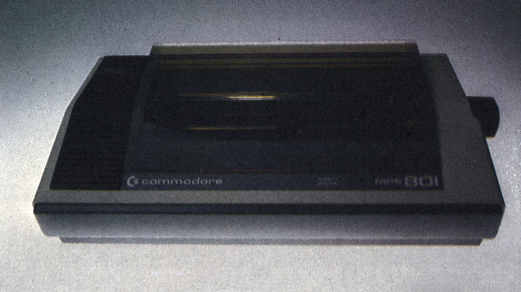
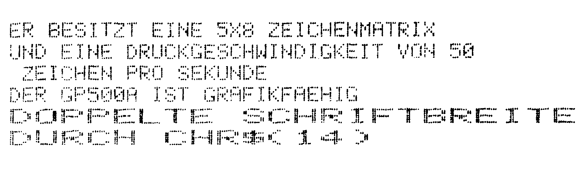
Ein Drucker für alle Gelegenheiten?
Rein äußerlich ist der MPS 803 (Bild 3) ein optisch ansprechendes, kompaktes Gerät, das sich auf altbekannte Art mit einem Kabel direkt an den C 64 anschließen läßt. Neu sind zwei bisher bei Commodore nicht übliche Schalter auf der Geräterückseite. Diese sind mit LPI (Lines per Inch = Zeilenabstand) und Device (Geräteadresse) bezeichnet. Mit ihrer Hilfe wird zumindest das Einstellen dieser Werte problemlos.
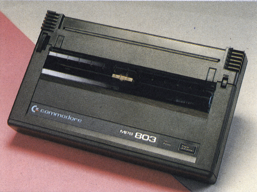
Der Papiereinzug des MPS 803 ist für Einzelblätter und Endlos-Rollenpapier gedacht, denn es fehlt jede Papierführung oder ein Traktorantrieb. Ein Traktor muß für etwa 100 Mark hinzugekauft werden. Diese Investition lohnt sich aber in jedem Fall, denn wenn man den Fehler begeht, das Papier nicht genau gerade einzulegen, so wandert es unweigerlich in die eine oder andere Richtung. Für eine Textverarbeitung ist der MPS 803 aber nicht nur wegen dieser Tatsache ungeeignet. Diese Anwendungen bleiben dem MPS 803 auch wegen seines Zeichensatzes vorenthalten. Der Zeichensatz ist auf den C 64 abgestimmt und hat demzufolge keine Umlaute. Es besteht zwar die Möglichkeit, sich die Umlaute im Grafikmodus selbst zu definieren, leider wird diese Funktion nur von den wenigsten Textprogrammen unterstützt. Aber selbst wenn man sich damit abfinden könnte, das Aussehen der einzelnen Buchstaben, besonders der Buchstaben mit Unterlängen, kann nur als unharmonisch bezeichnet werden. Es gibt keine echten Unterlängen. Das heißt, alle Buchstaben mit Unterlängen werden einfach angehoben und schweben erhaben über dem Rest des Wortes. Zusammen mit dem ohnehin nicht überzeugenden Druckbild (Bild 4) wird wohl kaum jemand auf die Idee kommen, Briefe mit diesem Schriftbild zu schreiben. Der MPS 803 hat aber auch seine positive Seite – er ist grafikfähig. Dabei ist dieses Wort allerdings zu relativieren, denn die Grafik des MPS 803 mit der eines Star NL 10 zu vergleichen hieße, Äpfel mit Birnen zu messen. Auch die Steuerbefehle und die Druckgeschwindigkeit reißen niemanden aus dem Sessel, denn Breit- und Reversschrift sind einfach zu wenig.
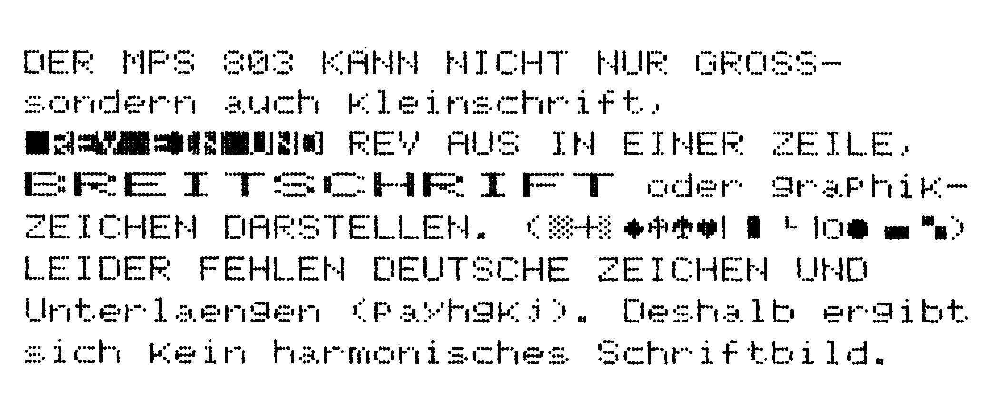
Mit einem Marktpreis von etwa 398 Mark, zuzüglich 100 Mark für einen Traktorantrieb, ist der MPS 803 für seine Leistungen eindeutig zu teuer. Bedenkt man, daß der etwas bessere MPS 801 inzwischen günstiger angeboten wird (Preis etwa 298 Mark), so dürfte sich der Preis wahrscheinlich nicht mehr allzulange halten.
Der Präsident 6313 C – das preiswerte Schwergewicht
Mit rund sieben Kilogramm stellt sich der Präsident 6313 C als ein Schwergewicht unter den Druckern vor. Aber ist er auch ein Meister seiner Klasse? Wir haben es getestet.
Der Präsident 6313 C (Bild 5) erweckt zunächst den Eindruck, als ob er aus einer anderen Welt käme. Tatsächlich ist dieser Eindruck gar nicht so falsch, denn er ist ein ostdeutsches Produkt, das versucht, mit dem westlichen Standard Schritt zu halten.
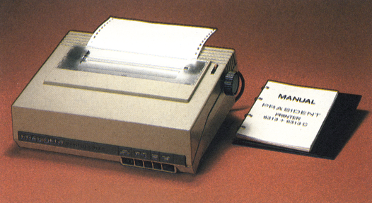
Zwar ist ansprechendes Design (er wirkt etwas klobig) nicht gerade seine Stärke, aber ein praktisches Gerät wie einen Drucker kauft man ja nicht nur als Schmuckstück für die Wohnung. Wer möglichst lange etwas von seiner Investition haben möchte, wird vielmehr Wert auf andere Attribute legen. In dieser Hinsicht hat der Präsident 6313 C allerdings einiges zu bieten. Er besitzt ein Chassis aus zwei Millimeter starkem Stahlblech, das alle anderen ebenfalls äußerst robust ausgeführten Teile aufnimmt. Dieser Eindruck wird dann noch bestärkt, wenn man den Drucker das erste Mal hochhebt, denn im Vergleich zu fernöstlicher Konkurrenz mutet dieses Schwergewicht wie ein prähistorischer Dinosaurier an. Wer dabei nicht aufpaßt, findet übrigens das Unterteil des Druckers recht unsanft auf seinen Zehen wieder, denn das Gehäuseoberteil ist erstaunlicherweise nur mit einem Scharnier befestigt. Bei diesem Gewicht ist das sicherlich kein Genuß.
Hat man das Auspacken und Aufstellen bis hierher ohne Schaden an Leib und Drucker überstanden, wird man neugierig darauf, den leicht zu öffnenden Deckel wie die Kühlerhaube eines Autos nach oben zu klappen und das Innenleben des Druckers zu inspizieren.
Der Motor für den Druckkopf-Transport ist in einem Druckgußgehäuse untergebracht, die Druckkopfführung besteht aus einem Vierkantprofil und auch sonst findet man Eisen soweit das Auge reicht.
Der Druckkopf scheint etwas überdimensioniert, was aber sicher nicht negativ zu bewerten, sondern eher Ausdruck östlichen Technologiestandards ist.
Die Farbbandkassette hat die Maße 12 x 13 Zentimeter und läßt sich vorbildlich einfach einlegen, respektive wechseln. Die Finger behalten dabei ihre ursprüngliche Farbe, was letztendlich auch der Kleidung zugute kommt, denn Druckerfarbe gehört bekanntlich zu den hartnäckigsten Flecken.
Die Einstellung der Anschlagstärke ist, wie man nun schon fast erwartet, mechanisch einwandfrei, aber nur mit schlanken Fingern problemlos zu verstellen.
Der Antrieb des Druckwerkes erfolgt mit einem Stahlseilzug, der sogar eine Spannvorrichtung in Form einer einfachen Feder aufweist.
Der Präsident 6313 C verarbeitet sowohl Endlos- als auch Rollenpapier und Einzelblätter, die allerdings nicht automatisch eingezogen werden. Letztere werden ähnlich einer Schreibmaschine von oben hinter der Gummiwalze eingeführt und dann ausgerichtet. Der notwendige Papierlöser ist unmittelbar am Drehkopf angebracht. Bei Endlos- oder Rollenpapier wird der Einführschlitz an der Rückseite des Präsident 6313 C benutzt. Sicher ungewöhnlich ist die Anordnung der Stachelwalzen auf einer Achse mit der Gummiwalze. Leider ist er so gestaltet, daß beim Abreißen des Papiers an der nicht besonders scharfen Abreißkante immer ein Teil des nächsten Blattes verlorengeht.
Geradezu fortschrittlich erscheinen dagegen die 36 Mikroschalter, die unübersehbar auf der Vorderseite des geöffneten Präsident 6313 C angebracht sind. Diese Fülle an Schaltern löst sofort emsiges Blättern im (ost)deutschen Handbuch aus. Dort findet man dann Erstaunliches: Der Präsident 6313 C ist kompatibel zum Epson-Standard, zum IBM-PC, zu Commodore-Computern, und auch zu Schneider-Computern soll er passen. Sollte hier etwa doch ein Meister aller Klassen des Arbeiter- und Bauernstaates stehen? Es sei an dieser Stelle vorweggenommen: Der Präsident 6313 C zeigt, daß nicht nur im fernen, sondern auch im nahen Osten gute Drucker gebaut werden. Das Schnittstellenproblem ist durch das schon vom Epson GX-80 bekannte Modulkonzept gelöst worden. An der Rückseite des Druckers wird ein Modul eingeschoben, das die gesamte Elektronik für die jeweilige Schnittstelle enthält. Doch zurück zu den Schaltern. Mit ihnen wird zunächst die Wahl unter den verschiedenen Modul-Betriebsarten getroffen. Damit erhalten die restlichen Schalter völlig unterschiedliche Bedeutungen. Die Wahl aus zehn internationalen Schriftsätzen ist möglich, Pica, Elite, komprimierte oder fette Schrift können hier fixiert werden (Bild 6). Auch die recht ansprechende NLQ-Schrift hat einen eigenen Schalter. Alle Auswahlmöglichkeiten sind auch mit dem CHR$-Befehl zu erreichen, außer Kraft zu setzen oder zu verändern. Der Präsident 6313 C ist mit 96 Zeichen pro Sekunde in der Normalschrift kein Meister der Geschwindigkeit, aber er nadelt zuverlässig seine Zeichen aufs Papier und auch vor der Grafik schreckt er nicht zurück. Im NLQ-Modus befindet er sich mit 23 Zeichen pro Sekunde in guter Gesellschaft. Die Nadeln hämmern dabei mit einer Kraft aufs Papier, die ausreichend für bis zu drei Durchschläge ist.
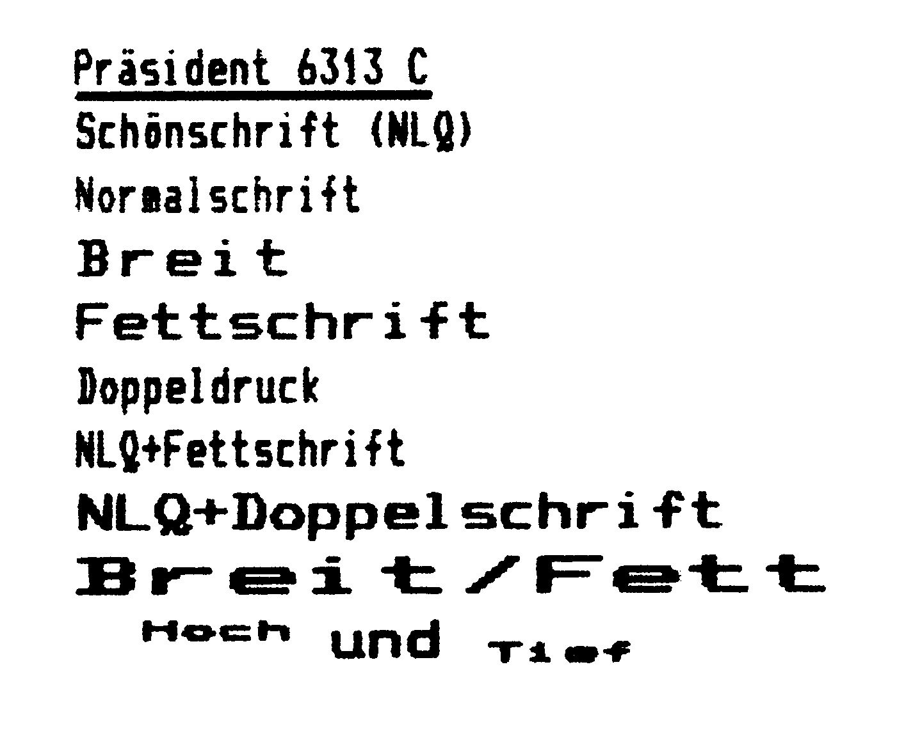
Der Drucker Präsident 6313 C ist ein gutes Beispiel dafür, daß preiswerte Computertechnik nicht immer nur aus dem fernen Amerika oder Japan kommen muß. Bedenkt man, unter welchen Schwierigkeiten dieser Drucker dort entstanden sein muß, denn in der DDR gehört schon ein simpler EPROM zu den knappen Gütern, kann man die Konstrukteure nur beglückwünschen. Mit einem Preis von 798 Mark ist er der derzeit preiswerteste Drucker mit NLQ-Fähigkeit, bei dem keinerlei Abstriche an der mechanischen Festigkeit gemacht wurden. Da der Präsident 6313 C nicht gerade als ausgesprochene Schönheit gelten kann, kommt es bei ihm viel mehr auf seine elektronischen und mechanischen Fähigkeiten an – und die stimmen rundum.
Zwei zum Preis von einem
Der DX 2100 stellt sich als ein in zweierlei Hinsicht kompatibler Drucker vor. Zum einen soll er den Epson FX-85, zum anderen aber, und das ist das Außergewöhnliche, auch den Farbdrucker JX-80 emulieren können. Mit anderen Worten, der DX 2100 (Bild 7) strengt sich an, zwei Drucker in sich zu vereinigen, allerdings mit der Absicht, beide in ihren Leistungen zu übertreffen. Erreicht wird diese Flexibilität durch einen sinnvoll konstruierten Farb-Umrüstsatz, der so einfach wie schnell einzubauen ist. Hat man diesen Umbausatz installiert, so genügt es, zwischen schwarzer und vierfarbiger Farbbandkassette, die sich garantiert ohne schmutzige Finger einlegen lassen, zu wählen, um den betreffenden Modus zu aktivieren. Eine Kerbe auf der Kassette signalisiert dem Drucker, ob er die Erlaubnis hat, das Farbband vor dem Kopf auf- und abzuschieben, um eine andere Farbe einzustellen. So wie die Farbfähigkeit als sinnvolle Ergänzung zu betrachten ist, so bleiben die monochromen Fähigkeiten eines Druckers bei weitem die wichtigeren Beurteilungskriterien. Das Schriftbild ist hier entscheidend. Um aber ein gutes Schriftbild überhaupt und auf Dauer erzeugen zu können, bedarf es einer Menge Stahl. Beim DX 2100 hat dieser Stahl die Form von zwei soliden Gleitschienen angenommen, auf denen der vollkommen gekapselte 9-Nadel-Druckkopf mit der Präzision einer Schweizer Uhr gleitet. Eigentlich ist gleiten nicht ganz das richtige Wort, denn die Geschwindigkeiten, die der Druckkopf des DX 2100 entwickelt, sind beeindruckend. Mit einer Geschwindigkeit von angegebenen 220 Zeichen pro Sekunde (gemessen 210) schaffte er unseren Probetext in der bisher nicht erreichten Zeit von 1:30 Minuten. Der eigentliche Geschwindigkeitsvorteil gegenüber der gesamten Konkurrenz macht sich aber so richtig erst dann bemerkbar, wenn es an den Ausdruck in der exzellenten »Near Letter Quality«-Schrift (Bild 8 und 9) geht. Während die meisten Drucker die NLQ-Schrift nur im unidirektionalen Druck erzeugen können, druckt der DX 2100 weiterhin bidirektional. Das heißt, wenn der Druckkopf über eine Zeile hin- und wieder zurückgestrichen ist, ist die Zeile fertig. Das läßt sich natürlich auch mit Zahlen belegen; die Druckgeschwindigkeit beträgt in der NLQ-Schrift immerhin noch 44 Zeichen pro Sekunde und steht damit ebenfalls an der Spitze aller bisher getesteten Drucker.
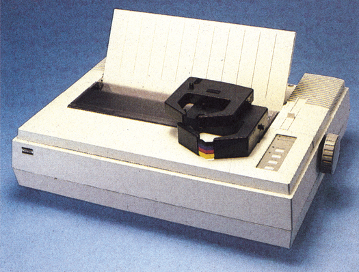
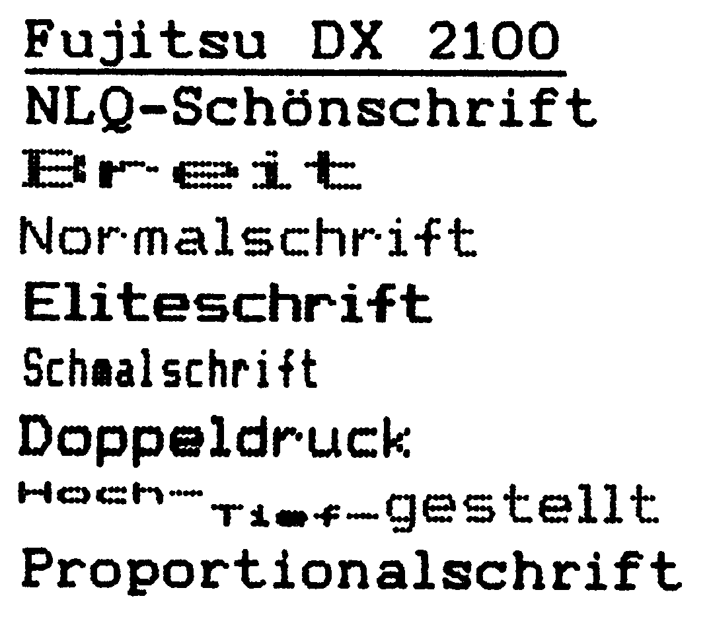
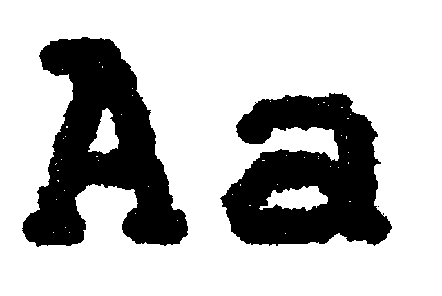
Neben der exzellenten Schriftqualität haben sich die Konstrukteure des DX 2100 aber noch einige Besonderheiten einfallen lassen. So fällt es beispielsweise sehr angenehm auf, daß man das Endlospapier (einfach durch Druck auf eine Funktionstaste nach hinten transportieren), eingespannt lassen kann, wenn man mit Einzelblättern arbeitet. Sowohl das Endlospapier als auch die Einzelblätter werden automatisch per Tastendruck eingezogen und genauestens justiert. Der Papierantrieb ist dabei so geschickt hinter der Schreibwalze angebracht, daß das Papier auch tatsächlich an der als Abrißkante bezeichneten Stelle sauber abgetrennt werden kann.
Was wäre ein Drucker ohne seine Steuerbefehle? Beim DX 2100 hat man wohl eine der bemerkenswertesten Auswahlpaletten an ESC-Befehlen, denn sowohl die FX-85- als auch die JX-80-Farbsteuerbefehle sind vorhanden. Wer aber lieber die Schriften mit Schaltern oder Tasten einstellen möchte, braucht beim DX 2100 nicht lange zu suchen. Die vier Funktionstasten dienen, je nachdem, in welcher Reihenfolge, beziehungsweise Kombination sie gedrückt werden, dazu, 14 verschiedene Schriften beziehungsweise Funktionen aufzurufen oder zu löschen. Alle diese Funktionen sind auf die gängigsten Programme abgestimmt. Dank eines in dieser Form noch nie dagewesenen Steckkartenkonzepts kann praktisch jede beliebige Schnittstelle entwickelt werden und in Form einer Karte eingeschoben werden. Auch die Aufrüstung des internen Speichers von 2 KByte ist um 8 KByte oder 16 KByte mit zwei Handgriffen durch einfaches Einstecken der Karte möglich. Da die sonst so gerne versteckten DIL-Schalter beim DX 2100 auf der Speicherkarte angebracht sind, kann man sie zwar nicht unmittelbar, aber immerhin ohne große Umstände und ohne Werkzeug erreichen. Der Zugriff auf die DIL-Schalter ist aber wegen des weiter oben beschriebenen Bedienereinstellmodus nur in sehr seltenen Fällen notwendig.
Die Mischung aus perfektem Textdrucker und den Farbfähigkeiten des JX-80 scheint derzeit das ideale Konzept für Heim- und Personal Computer zu sein, die ja einerseits für Farbgrafiken, aber eben immer mehr zur Text- und Datenverarbeitung verwendet werden. Es sollte so sein, daß sich die Flexibilität der Computer auch in ihren Peripheriegeräten fortsetzt. Der DX 2100, der auch in einer IBM-Version erhältlich ist, ist ein ideales Beispiel dafür, wie diese Absicht in vertretbaren Preisregionen verwirklicht wurde.
Mit einem Listenpreis von 1932 Mark und einem Aufpreis von 456 Mark für die Farboption ist der DX 2100 ein Drucker, der, gemessen an seinen Leistungen, preiswert ist. Er ist unser Referenzdrucker der Preisklasse III.
Der Riesenzwerg
Gleich nach dem Auspacken des 120 D fällt das sehr kompakte Äußere auf. Mit 37,5 Zentimeter Breite und nur 23 Zentimeter Tiefe ein relativ kleiner Drucker, mit geringem Gewicht. Die schon fast üblichen Tasten ONLINE, FF und LF sind mit den optischen Kontrollen auch hier vorhanden. Auf die Funktionen dieser Tasten soll später eingegangen werden. Das Einlegen der Farbbandkassette verursacht zwar kein Kopfzerbrechen, dafür aber ganz schön schwarze Finger. Der Druckkopf macht einen etwas zierlichen Eindruck, ist aber seinen Aufgaben problemlos gewachsen. Von einem Zahnriemen getrieben, wird er auf zwei Lagern geführt. Davon ist das vordere eine Schiene und das hintere ein Winkel als Gegenlager. Damit wird die für die Schönschrift erforderliche Präzision erreicht, obwohl zwei Schienen die bessere Lösung wären. Als ein Drucker mit Epson- und IBM-Modus wird der 120 D (Bild 10) von einem deutschen Handbuch vorgestellt. Das Handbuch ist gut gegliedert und gibt, klar in der Darstellung, auf fast alle Fragen Antwort.
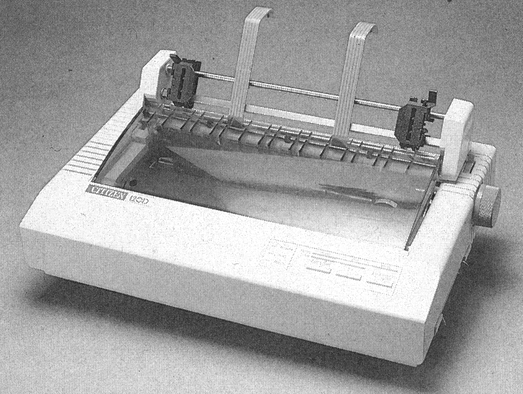
Auch der 120 D hat, wie die Geräte der MSP-Serie, einen sogenannten »Maintenance Self Test«, kurz MST, der über die eingebaute ROM-Version und das Datum der Programmierung Auskunft gibt. Anschließend werden Zeile für Zeile »H«s gedruckt, die der Überprüfung der Lage des Druckkopfes dienen. Leider wird die Stellung der DIP-Schalter im MSP des 120 D nicht mehr angezeigt. Dies war angenehm bei dem MSP 10, ist aber beim 120 D auch nicht mehr unbedingt notwendig, da die DIP-Schalter von außen zugänglich sind. Den Entwicklern des 120 D ist zur Frage der Schnittstellen etwas Besonderes eingefallen. Das jeweils gewünschte Interface wird als Kassette eingeschoben. Diese Idee hat man perfektioniert und so lassen sich Schnittstellen bequem und ohne Werkzeug an der rechten Seite des 120 D einschieben. Die DIP-Schalter befinden sich in dieser Kassette und sind im eingeschobenen Zustand unter dem Druckkopfweg zugänglich. Eine gute Lösung, die sich auch bei anderen Druckern durchsetzen sollte. Wenn auch wegen der eben erwähnten Zugänglichkeit nicht mehr notwendig, so soll nicht verschwiegen werden, daß das Gehäuse des 120 D ohne jedes Werkzeug zu öffnen und zu schließen ist. Die Mechanik des 120 D ist gegenüber dem MSP 10 deutlich verbessert worden. Im Grundzustand ist der 120 D, ähnlich einer Schreibmaschine, nur für Einzelblätter geeignet. Diese lassen sich einfach und sicher einlegen. Wird die Verarbeitung von Endlospapier notwendig, so kann ein zum Lieferumfang gehörender Traktor mit einem Handgriff aufgesetzt werden.
Die Verriegelung der Stachelwalzen ist, gegenüber dem MSP 10, offensichtlich mit gutem Ergebnis überarbeitet worden und ist kein Grund zur Kritik mehr. Wegen des Aufsetzens und dem damit verbundenen längeren Transportweg des Papiers geht allerdings beim Entnehmen eines Dokuments ein Leerblatt verloren.
Eine gute Sache, die beim 120 D nochmals verbessert wurde, ist der vom MSP 10 bekannte Hex-Dump. Durch Drücken von LF und FF während des Einschaltens angewählt, wird man beim Ausdruck einer Textzeile überrascht seinen Augen nicht trauen. Nicht nur die HEX-Werte erscheinen auf dem Papier, sondern auf der rechten Seite des Blattes auch die dazu gehörenden ASCII-Zeichen. Ein Leistungsmerkmal, das den MSP 10 schon als anwenderfreundlich ausgewiesen hat.
Beim 120 D ist dieser Modus nochmals verbessert. Außer der Darstellung der ASCII-Zeichen werden auch »CR, SPACE, ESC« und andere Steuer-Befehle als Abkürzung dargestellt. Beim MSP 10 befand sich beispielsweise an der Stelle des »CR« ein Punkt. Beim 120 D erscheint das Kürzel »CR« so, daß beide Buchstaben übereinander stehen. Jeder, der schon einmal mit Handbüchern Hex-Werte in ASCII-Zeichen umgesetzt hat, wird diesen Komfort des 120 D schnell schätzen lernen.
Mit den Tasten ONLINE, LF und FF werden Hex-Dump, der Selbsttest, der Maintenance-Test und die Umschaltung in den NLQ-Modus vorgenommen. Das Einschalten des NLQ-Modus kann zeilenweise geschehen, das heißt, wird während eines Druckvorganges in den NLQ-Modus geschaltet, so wird die laufende Zeile ordnungsgemäß beendet und dann werden die folgenden Zeilen in Schönschrift aufs Papier gebracht. Ähnlich dem Epson FX-85 kann mit ONLINE und FF in einen Auswahlmodus geschaltet werden, der dann die Wahl verschiedener Darstellungsarten ermöglicht.
Papierbreiten von 76,2 mm bis hin zu 240 mm sind keine besondere Aufgabe für den 120 D. Dabei sind außer dem Original noch zwei Durchschläge möglich. Die Anschlagstärke wird an einem kleinen Hebel, seitlich rechts am Gehäuse, verändert. Keine Frage, auch Einzelblätter verarbeitet der 120 D mühelos.
Die hinlänglich bekannten, weil oft verwendeten ESC-Befehle dienen dem 120 D wie auch dem Vorbild zur Steuerung von Format-Anweisungen, Schriftartenumschaltung und der Ausführung sonstiger Steuerbefehle. Der 120 D verfügt im wesentlichen über den Befehlsumfang des FX-85, weshalb auch mit den wenigsten Programmen Probleme zu erwarten sind. Ein Befehl soll aber an dieser Stelle besonders hervorgehoben werden: CHR$(27) »h«. Mit diesem Befehl wird der 120 D veranlaßt, alle nachfolgenden Zeichen in doppelter Höhe zu Papier zu bringen (Bild 11).
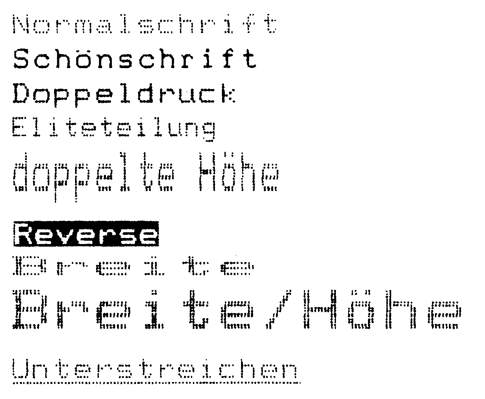
Für 998 Mark wechselt der 120 D seinen Besitzer und zeichnet sich damit durch ein exzellentes Preis-/Leistungsverhältnis aus. Bedenkt man, daß sich der Marktpreis in der Regel noch etwas unterhalb dieses Listenpreises einpegelt, kann man von einer kleinen Sensation sprechen. Man erhält neben einem sehr guten Schriftbild in Near Letter Qualität (Bild 11 und 12) auch fast alle Funktionen des Epson FX-85 und sogar noch einen erweiterten Hex-Dump dazu. In der mechanischen Qualität zeigt der FX-85 durch seinen grundsoliden Aufbau allerdings, warum er fast 1000 Mark teurer ist. Trotzdem kann der Citizen 120 D ein Verkaufsschlager werden, denn ähnliche Leistungen wurden bislang nicht für so wenig Geld angeboten. Er ist unser Referenzdrucker der Preisklasse I.
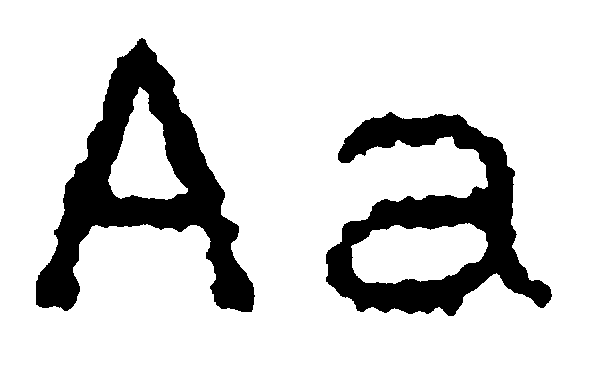
Fast ideal – der NL-10
Mit dem NL-10 (Bild 13, 1145 Mark) hat Star versucht, alle Wünsche an einen guten Drucker zu erfüllen. Es hat allen Anschein, als ob es ihnen auch gelungen ist. Betrachten wir den NL-10 etwas genauer. Das Gehäuse ist beigefarben und paßt exzellent zum C 128, aber auch neben dem C 64 gefällt die Farbe. Wichtiger als die Farbe aber ist die Art, wie der NL-10 Papier verarbeitet. Während es beim SG-10 noch ein kleines Ärgernis war, daß durch den oben angebrachten Traktor jedesmal beim Einspannen ein Blatt verlorenging, hat der NL-10 den Traktor hinter der Schreibwalze im Gehäuse versenkt. Die Stachelwalzen lassen sich auf der ganzen Breite des Druckers verschieben, so daß auch schmale Etiketten problemlos eingespannt werden können. Links neben der Schreibwalze, die unter einer flachen Plastikabdeckung, die beim Anheben übrigens den Druckvorgang anhält, verborgen ist, befindet sich ein Multifunktionshebel. Seine Aufgabe ist es, einzustellen, ob Einzel- oder Endlospapier eingespannt ist. Seine zweite Aufgabe ist es, den automatischen Einzelblatteinzug zu aktivieren. Ganz gleich mit welcher Papierart gedruckt werden soll, man legt einfach den Hebel nach hinten und das Papier wird automatisch eingezogen, zentriert und hinter den Andruckrollen fixiert. Der 9-Nadel-Druckkopf macht ebenso wie seine Führungsschienen einen sehr soliden und dauerhaften Eindruck. Links und rechts neben dem Druckkopf findet man etwas, das man normalerweise nur bei einer Schreibmaschine erwartet. Auf zwei Formstücken aus klarem Plastik sind hilfreiche Justierstriche angebracht, die besonders beim Ausfüllen von Formularen von Nutzen sind. Wer beim NL-10 eine Abrißkante für das Papier sucht, braucht dies nicht vergeblich zu tun, denn an der Abdeckung befindet sich eine Kante, die ihren Namen zu Recht trägt, denn sie ist messerscharf.
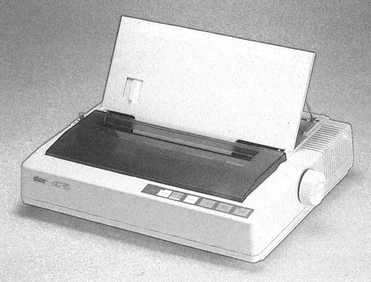
Der NL-10 arbeitet mit einer breiten Nylon-Farbbandkassette, die sich ohne Farbabdrücke auf den Fingern zu hinterlassen, einlegen läßt. Auch die DIL-Schalter gaben keinen Grund zur Kritik, denn sie befinden sich gut erreichbar auf der Gehäuserückseite.
Der NL-10 läßt sich wie ein Drucker der Spitzenklasse programmieren. Gut erreichbar auf der vorderen Gehäuseoberseite besitzt er fünf verschiedene Schalter und sieben Leuchtdioden. Mit den Schaltern lassen sich neben den üblichen Funktionen wie On Line, Zeilen- und Seitenvorschub die gewünschten Schriftarten bis hin zur exzellenten NLQ-Schrift (Bild 14 und 15) einstellen. Die fünfte Taste dient der Wahl der Fettschrift in Kombination mit der gewünschten Schriftgröße. Im Off-Line-Modus kann man per Tastendruck sogar die beiden Ränder einstellen. Der Druckkopf wird dabei von links oder rechts so lange in Mikroschritten bewegt, bis die gewünschte Position erreicht ist. Eine genaue Justierung auf besondere Formate und Formulare wird damit zum Spiel statt zum streßbeladenen Manöver. Der Clou der Tastenprogrammierung ist die Möglichkeit, die gewählte Einstellung zu fixieren. Natürlich lassen sich sämtliche Funktionen auch über die bekannten CHR$- und ESC-Befehle einstellen. Dabei wartet der NL-10 mit einer nützlichen und einer netten Raffinesse auf. Zunächst die nette. Hat man den Drucker fleißig mit verschiedenen Schriften programmiert, so flackern bei jedem Schriftwechsel die zugehörigen Leuchtdioden kurz auf. Wesentlich wichtiger aber ist der Befehlssatz des NL-10. Dieser Befehlssatz wird aber im wesentlichen durch das verwendete Schnittstellenmodul beeinflußt. Beim Kauf hat man die Auswahl zwischen einem Centronics- (ESC/P), einem IBM- und erfreulicherweise auch einem Commodore-Modul für C 64/C 128. Im Preis von 1145 Mark ist ein Modul nach Wahl einbegriffen. Mit dem Commodore-Modul, das einfach auf der Geräterückseite eingesteckt wird, ist der NL-10 direkt an den C 64, beziehungsweise C 128 anschließbar. Trotzdem bleibt die Möglichkeit, bei Bedarf ein Centronics- oder IBM-Modul (je 150 Mark) kaufen zu können. Der NL-10 ist wohl der einzige Drucker, bei dem die Programmierung des Commodore-Moduls so gut gelungen ist, daß man als C 64-, C 128-Besitzer getrost den Drucker mit entsprechendem Commodore-Modul kaufen kann. Trotz der Implementierung aller Befehle des MPS 803, einschließlich der Grafikbefehle, bleiben die Funktionen beispielsweise eines Epson LX-80 erhalten. Gleiches gilt für den Zeichensatz, hier hat man die freie Auswahl. Zum einen kann man den original Commodore-Zeichensatz oder den ASCII-Zeichensatz verwenden. Einer der DIL-Schalter ermöglicht es sogar, den Commodore-Zeichensatz an Stelle einiger Grafikzeichen um die deutschen Sonderzeichen und Umlaute zu bereichern. Das ganze haben wir mit verschiedenen Text- und Grafikprogrammen getestet. So druckt der NL-10 bespielsweise problemlos mit Vizawrite 64 und Textomat plus sowie ProText zusammen. Jedes erstellte Schriftstück hat alle Umlaute plus fast alle Commodore-Grafikzeichen. Dabei war es in keinem Fall notwendig, auch nur einen einzigen Befehl vorher an den Drucker zu übermitteln – alles funktioniert auf Anhieb! Bei den Grafikprogrammen war das Ergebnis sogar noch besser. Sowohl mit dem Copy-Befehl von Simons Basic (HiRes-Hardcopy), als auch mit Print Shop läßt sich ohne Anpassungsprobleme sofort drucken. Wohlgemerkt, das alles funktioniert, ohne auch nur einen Befehl aus dem übrigens sehr guten deutschen Handbuch wissen zu müssen. Bei diesen Programmen verwendet der NL-10 die 7-Nadel-Grafik des MPS 803. So richtig zum Zug kommt er aber erst, wenn man seine LX-80-Fähigkeiten verwendet. Dann ist er in der Lage, Grafiken mit bis zu vierfacher Dichte (wie der Fujitsu DX 2100) zu drucken. Mit dieser Grafik funktionieren übrigens alle Hardcopy-Routinen für Epson-Drucker. Nicht unerwähnt bleiben soll auch der Hexdump-Modus, bei dem der NL-10 sowohl Hex-Zahlen als auch deren Dezimalwerte in Klarschrift darstellt.
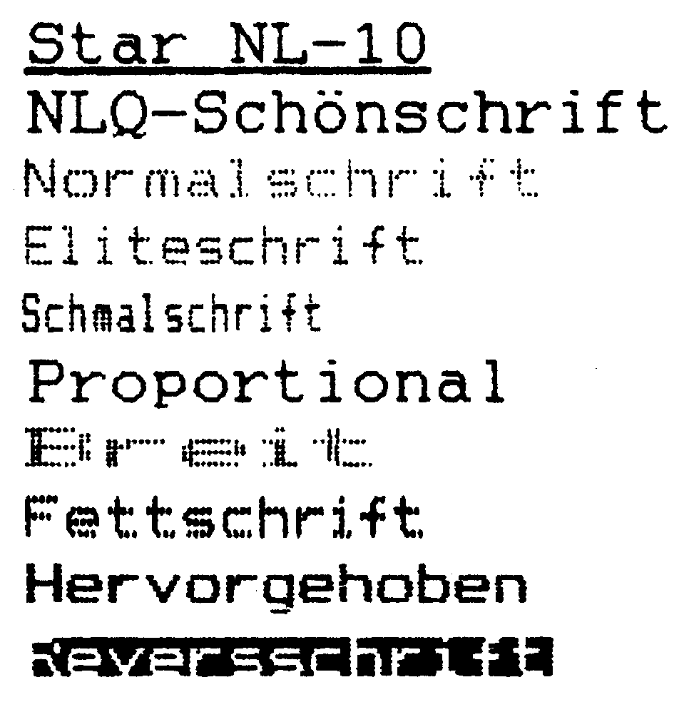
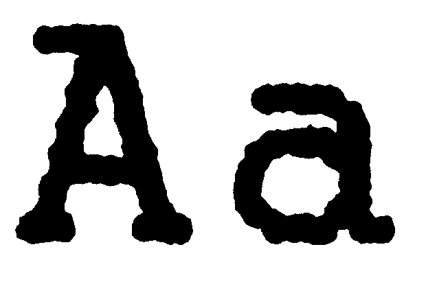
Auch für Programmierer
Wer lieber seine eigenen Buchstaben entwerfen will, hat dazu ausreichend Gelegenheit, denn sowohl die Standard-, als auch die NLQ-Zeichen sind vor keiner Veränderung sicher. Seine exzellenten Schriftqualitäten (Bild 8) prädestinieren den NL-10 zur Textausgabe. Trotzdem besitzt er auch Fähigkeiten, die das Herz jedes Programmierers höher schlagen lassen. Der NL-10 druckt jedes Commodore-Zeichen korrekt, so wie es auch auf dem Bildschirm zu sehen ist. Mit den Cursor- und Farbsteuerzeichen macht er aber etwas ganz besonderes. Ein Listing, mit dem NL-10 erzeugt, sieht automatisch ähnlich aus, wie unsere Checksummer-Listings, denn alle wenig aussagekräftigen Steuerzeichen werden in Klarschrift übersetzt. Die manchmal schon nervtötende Suche in verschiedenen Vergleichstabellen findet mit dem NL-10 endgültig ihr Ende. Er ist unser Referenzdrucker Preisklasse II.
(aw)